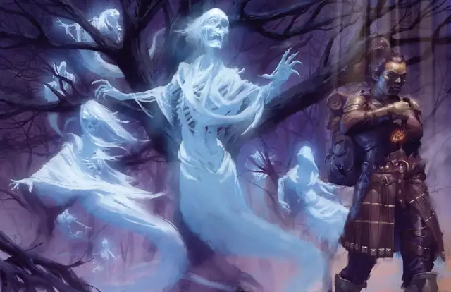

Спектр
Specter
Средняя Нежить, Хаотичная Злая

Класс Защиты 12 Инициатива +2 (12)
Хиты 22 (5к8)
Скорость 30 футов, Полёта 50 футов (парит)
| мод | спас | ||
|---|---|---|---|
| СИЛ | 1 | −5 | −5 |
| ЛОВ | 14 | +2 | +2 |
| ТЕЛ | 11 | +0 | +0 |
| мод | спас | ||
|---|---|---|---|
| ИНТ | 10 | +0 | +0 |
| МДР | 10 | +0 | +0 |
| ХАР | 11 | +0 | +0 |
Сопротивление урону Дробящий, Колющий, Рубящий, Звук, Кислота, Огонь, Холод, Электричество
Иммунитеты Некротический, Яд; Бессознательный, Истощение, Окаменевший, Опрокинутый, Опутанный, Отравленный, Очарованный, Парализованный, Схваченный
Чувства Тёмное зрение 60 футов, пассивное Восприятие 10
Языки знает Общий плюс один другой язык, но не говорит
Опасность 1 (200 опыта; БВ +2)
Особенности
Бестелесное перемещение. Спектр может перемещаться через других существ и объекты, как если бы они были Труднопроходимой местностью. Он получает 5 (1к10) Силового урона, если завершает свой ход внутри объекта.
Чувствительность к солнечному свету. Находясь на солнечном свету, спектр совершает с Помехой все проверки характеристик и броски атаки.
Действия
Вытягивание жизни. Бросок рукопашной атаки: +4, досягаемость 5 фт. Попадание: 7 (2к6) Некротического урона. Если цель — существо, её максимум Хитов снижается на число, равное полученному урону.
Бонус мастерства +2
Среда обитания Город, Подземье
Сокровища Отсутствуют
Спектр
Дух гнева и служитель смерти
Спектры — бестелесные, пожирающие жизнь духи, которых тянет к тьме и отрицательным эмоциям. Утратив всякую связь с теми, кем были прежде, эти злобные призраки иссушают эссенцию смертных, воруя мимолётные отголоски жизни и тепла.
Спектры ищут существ и места, источающие зло, и питаются страданиями, которые сами порождают. Совершите бросок по таблице «Обиталища спектров» для вдохновения или определите сами укрывающее спектра место.
Обиталища спектров
| к8 | Спектр скрывается рядом с... |
| 1 | Общиной, поражённой проклятиями, обидами, морами или трагедиями. |
| 2 | Злым Артефактом или смертоносным магическим устройством. |
| 3 | Логовом Исчадия или Нежити. |
| 4 | Местом, где умер или погребён злодей. |
| 5 | Порталом на Нижние планы, Негативный план или Царство Теней. |
| 6 | Святилищем некроманта или культа смерти. |
| 7 | Уединённым монументом, сковывающим злые души. |
| 8 | Местом катастрофы или массовой гибели. |